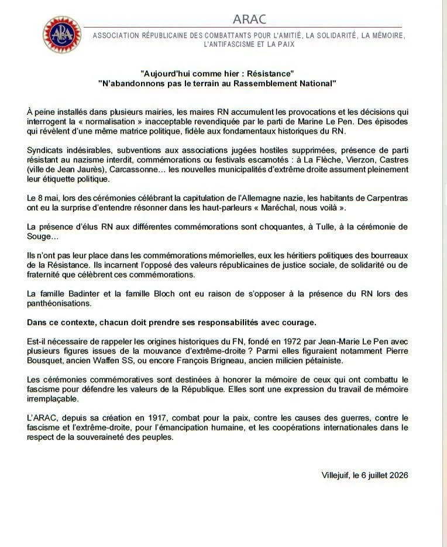

Déclaration associative relayée
L’ARAC appelle à faire front contre le Rassemblement national
Date indiquée par Facebook · 9 juillet 2026
Repères éditoriaux
Nous relayons la déclaration signée par l’ARAC à Villejuif le 6 juillet 2026. L’association dénonce les décisions de municipalités dirigées par le RN et rappelle le sens des commémorations en hommage à celles et ceux qui ont combattu le fascisme.
Texte conservé avec la publication
Déclaration de l'ARAC sur le Rassemblement National, le 6 juillet 2026...

Sources
Archive rouge · export Facebook · AR-0002-FB-00739
À lire aussi · L’antifascisme est le combat de tous les démocrates et républicains